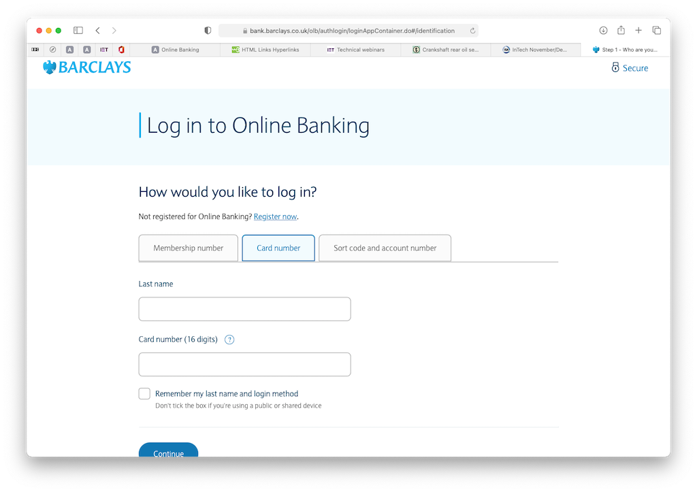
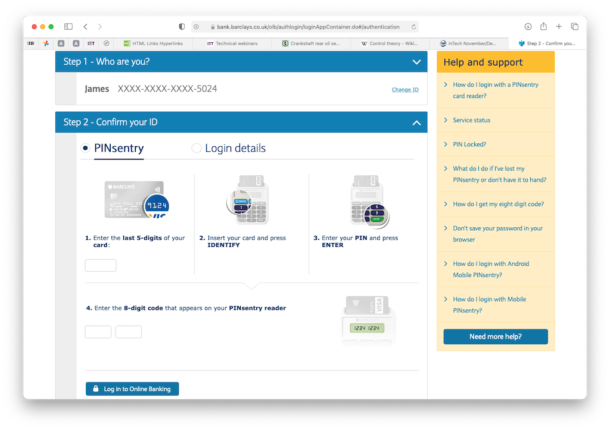
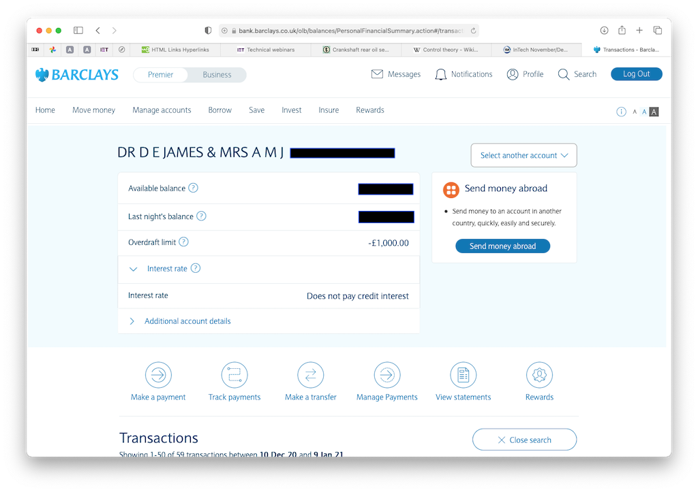
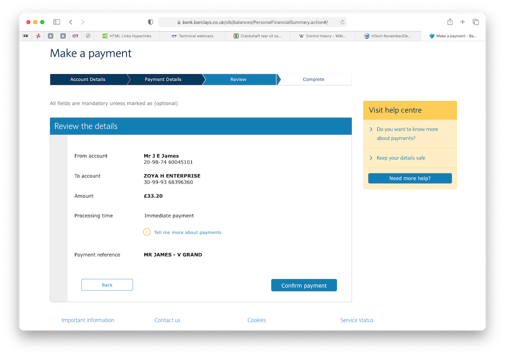

We use online banking to check our current account (and Dad's current account), set up and revise standing orders and to make payments, known as 'transfers'. This page explains how to access online facilities and make payments.
You may then be asked to chose an account. Since you only have one it may take you directly to our account. When on the account page you can scroll down to see the transactions and make payments, view/add/amend standing orders, etc..
Once logged in you can click on 'Make a payment'. You can then choose to pay an existing payee or to pay someone new. If the latter then you will be asked to enter their account name, number and sort code. Remember that these days they check that the name is the same as that on the account. If you pay an existing payee then you simply click on one from the list. In either case you will be asked to enter the amount and whether you want to pay now or at some later time.
When you 'continue' you will be shown the details of the payment that you wish to make before you confirm it. The payment reference will appear on the bank statement.
You will get confirmation that the payment has been made and if you return to your account you will see the transaction at the top of the list (if you opted to pay now). It's as simple as that.
© David James 2021 Last updated: 11th January 2021